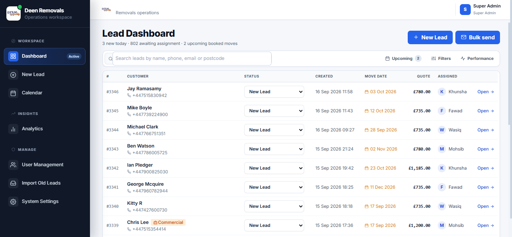
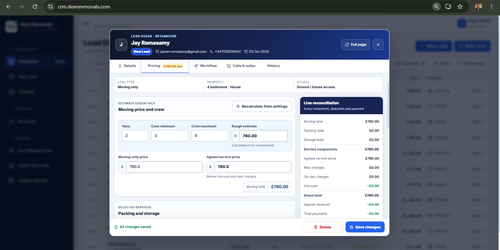
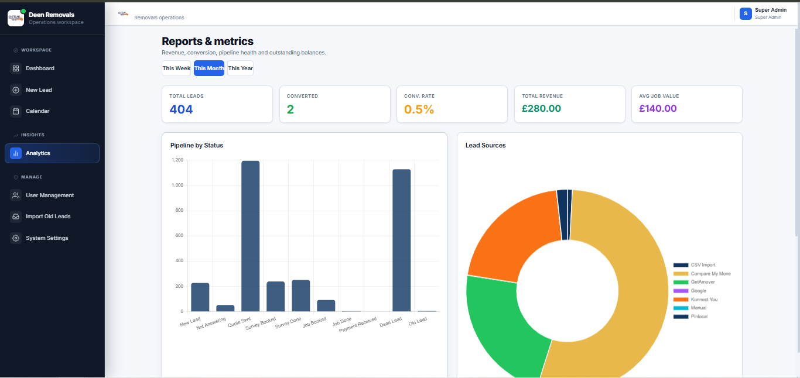

Oliver ShawGetamover · Manchester to York
£1,240AssignedBuilt for UK removals teams
Every enquiry.
Every follow-up.
One clear system.
MoverSync pulls leads from Pinlocal, Getamover, Sirelo, Triglobal and Compare My Move into one pipeline, then helps your team quote, chase, schedule and invoice without duplicate admin.
- Working product demo
- Setup around your process
- Month-to-month plans
MoverSyncLive workspace
Booked revenue£48,620+£9,840 this month
Admin cost saved£1,46094 hours recovered
Quote conversion37.8%Up 8.6 points
Incoming leadsAuto-refreshing
Amelia KhanCompare My Move · Croydon to Reading
£980Quote sentJack WilliamsPinlocal · Bristol to Bath
£1,760Follow-up dueLead receivedReply sentReminder set
New leadAssigned in 18 seconds
Invoice paid£1,420 received
0%leads captured automatically
0 hrsadmin saved per office, weekly
0%illustrative conversion uplift
£0illustrative annual cost saved
Performance figures are representative examples based on configured workflows. Results vary by lead volume, staffing and sales process.
One connected workflow
From new lead to paid invoice.
No loose spreadsheets and no separate diary. Each customer record holds the source, quote, messages, tasks, move date, crew, payments and documents.
Capture
Parse new enquiries from lead providers, website forms and email. Detect duplicates and assign the right salesperson.
Pinlocal · Getamover · Sirelo · Triglobal · Konnect YouConvert
Use consistent templates, quote from saved rules and run timed follow-ups until the prospect replies or opts out.
Email templates · Tasks · Reminders · NotesDeliver
Put confirmed moves onto a shared calendar, allocate vehicles and crews, and prevent double bookings.
Calendar · Scheduling · Crew view · Job sheetsCollect
Turn accepted quotes into invoices, track deposits and balances, and see outstanding revenue immediately.
Invoices · Payments · Revenue · ReportsThe real interface
Simple enough for the office. Detailed enough for the owner.
Switch between the screens below, then open the full demo to use the system yourself.



Calculate the impact
Put a value on missed follow-ups and admin.
Adjust the sliders using your current numbers. The calculator separates recovered booking revenue from time-based operating savings.
Model assumption: automation helps recover 20% of currently lost quotes and saves 12 minutes per lead at £15 per admin hour.
Potential recovered revenue£0per year
Admin cost saved£0per year
Owner perspective
Built around the way removals teams actually work.
Deen Removals and Storage Ltd and Stars Removals and Storage Ltd are named examples supplied for this page. Remaining company stories are illustrative placeholders and should be replaced with approved customer references before publication.
Compare the stack
One purpose-built system instead of several disconnected subscriptions.
Competitor pricing changes by region, contract and add-ons. The table uses indicative entry positions and quote status, not guaranteed totals.
| Capability | MoverSync | Pipedrive | HubSpot Sales Hub | SmartMoving | Supermove |
|---|---|---|---|---|---|
| Indicative cost | From £149/month | Per user, tiered | Per seat, tiered | Quote required | Quote required |
| UK lead-provider intake | Included | Custom setup | Custom setup | Integration dependent | Integration dependent |
| Removals quote workflow | Included | Requires configuration | Requires configuration | Included | Included |
| Automated follow-ups | Included | Plan dependent | Plan dependent | Included | Included |
| Van and crew calendar | Included | External tool | External tool | Included | Included |
| Invoices and balances | Included | External tool | External tool | Included | Included |
| Configured for a UK operator | Yes | General CRM | General CRM | Moving software | Moving software |
| Full interactive demo | Open now | Vendor trial | Vendor trial | Book demo | Book demo |
Product names belong to their respective owners. Comparison is based on publicly described product positioning and may change. Confirm current pricing and features with each vendor.
Simple monthly pricing
Start with the team you have. Upgrade when you need more capacity.
Admin access is included and does not consume a user seat. All plans are billed monthly.
Starter
£149/month
For a small office that needs one reliable sales process.
- 2 users plus admin
- Lead inbox and provider parsing
- Quotes and email templates
- Automated follow-ups
- Calendar and reminders
- Invoices and balances
Growth
£249/month
For a growing sales and operations team that needs control.
- 5 users plus admin
- Everything in Starter
- Van and crew scheduling
- Team performance dashboard
- Advanced lead-source reporting
- Custom workflow rules
- Priority email support
Scale
£399/month
For established operators managing more people and work.
- 10 users plus admin
- Everything in Growth
- Multiple branches and teams
- Advanced permissions
- Custom reports and exports
- API and custom integrations
- Onboarding and priority support
Can it receive leads from our current providers?
Yes. MoverSync can parse structured lead emails and map them to a consistent customer record. The final setup depends on the format each provider sends to your business.
Can we keep our existing email address?
Yes. The CRM can be configured around your business mailbox and approved sender settings. Email activity stays attached to the relevant lead.
Does the demo save real customer data?
No. The public demo uses seeded example data in your browser. Refreshing the demo restores the default sample workspace.
Can our process be customised?
Yes. Statuses, templates, user roles, reminders, quote rules and reports can be configured around your operating process.
Is there a long contract?
The displayed plans are monthly. Any custom integration or migration work is agreed separately before work begins.
See it before you discuss it
Use the CRM demo with realistic UK removals data.
Open leads, send a template, schedule a move, review invoices and inspect the dashboard. No sign-up required.